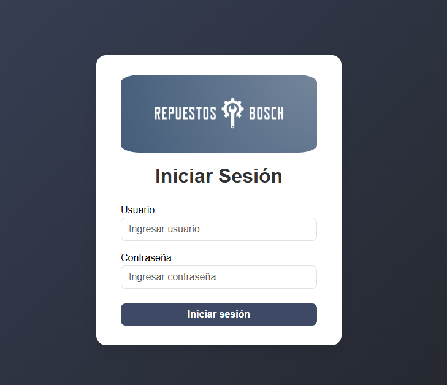
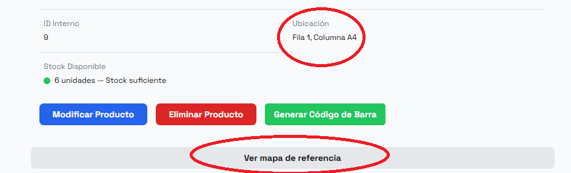
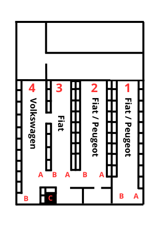
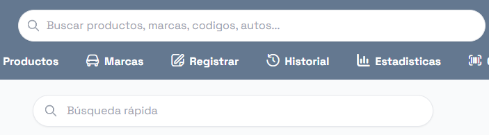
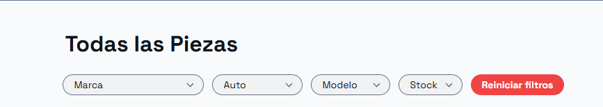
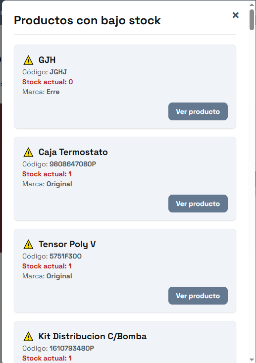

Explore las funcionalidades clave de nuestro sistema. A continuación, se presenta un recorrido visual por los módulos principales, desde el acceso seguro hasta la gestión avanzada de inventario y localización.
Punto de acceso seguro que requiere credenciales de usuario y contraseña para validar la identidad y los permisos del operador.
La vista principal del sistema (Dashboard) presenta un resumen operativo con los productos más buscados, barra de navegación superior, búsqueda rápida y una bienvenida personalizada.

Permite la gestión de usuarios, roles y permisos. Incluye iniciar sesión y cambio de contraseña.

Módulo para el Alta, Baja y Modificación de todo el catálogo. Permite ingresar marca, código, descripción y cantidad.
Registro de seguridad que captura cada acción crítica con los datos del usuario que la ejecutó, manteniendo la integridad de la base de datos.
Asocia cada repuesto a su coordenada física exacta (Ej: Estantería A, Fila 3, Nivel 4). Esto transforma el depósito en un mapa digital, haciendo la búsqueda instantánea.
 Permite la búsqueda inmediata por código, descripción o marca. Utiliza filtros para encontrar la ubicación y el stock disponible.
 Genera e imprime etiquetas. Permite restar o eliminar stock al escanear o ingresar el código de forma manual.
Registra cronológicamente cada cambio importante realizado en el inventario o en la ubicación de los productos, garantizando la trazabilidad completa.

Notifica automáticamente al personal cuando el stock de un repuesto cae por debajo del límite de seguridad preestablecido, evitando rupturas de inventario.
Módulo visual que presenta datos clave del inventario, como el conteo total y el valor del stock actual, ayudando a la toma de decisiones.
Página dedicada a la segmentación y filtrado rápido de repuestos por las marcas que maneja el negocio: Fiat, Peugeot y Volkswagen.

Podemos ampliar las capacidades del sistema. Estos módulos personalizados (ej. Integración con MercadoLibre, Módulo AFIP, etc.) se cotizan por separado a nuestro costo real de desarrollo.
Ver Opciones de Customización y Precios